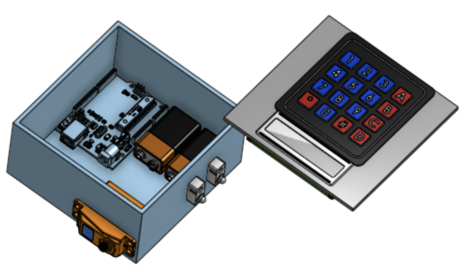
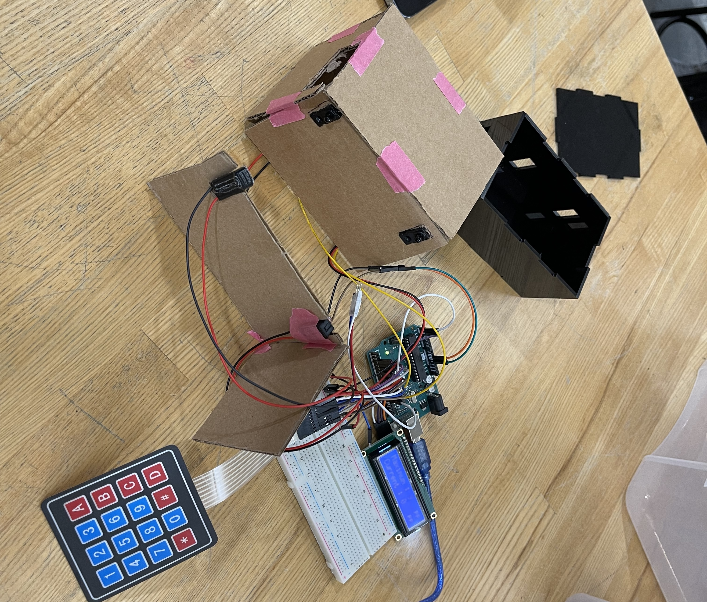
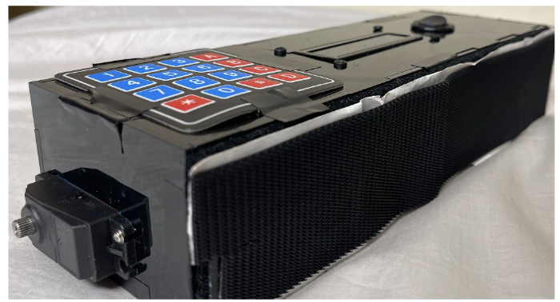

Room Occupancy Monitor
Embedded Firmware Device
Computer Engineer
Room Occupancy Monitor is a device that monitors the number of people entering/ exiting a room and prevent the trepass after reaching maximum occupancy. This is a semester long project for Engineering Design class. the team was formed by engineering students from all fields to work on different parts of project. My part is in Electrical & Computer Engineering where I have to manage our tasks between me who focused on firmware development and Bach who focused more on electronics power systems. However, we cooperated,tested and debugged all the components both software and hardware sides while communicating with Mechanical team (Caleb & Camellia) to deliver multi-disciplinary projects that exceed the requirement perfectly. Outside our specialty, we all learned general Engineering Design Principle, how to design product to suit and solve client's problem, how to apply Project Management such as Gantt Chart to our project timeline and even has an opportunituy to practice presenting and selling our work to client.
I extended the system with ESP32-based IoT capability through UART communication, connecting the embedded firmware to a web interface while still supporting online access and remote monitoring.
Team Members: Bach Nguyen, Caleb Schwartz, Camellia Mohamed
My responsibilities

CAD Design

First Prototype

Final Product
Demo Video for Final Product led by Caleb, I was either holding camera or conducting sensor testing with in video